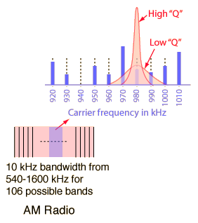
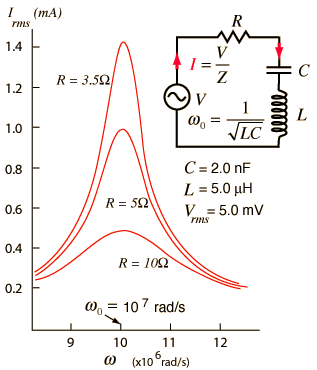
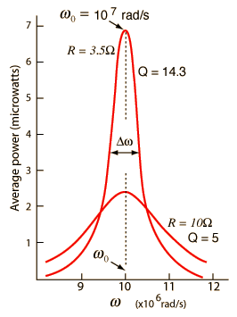
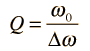
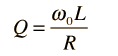

Selectivity and Q of a Circuit
Resonant circuits are used to respond selectively to signals of a given frequency while discriminating against signals of different frequencies. If the response of the circuit is more narrowly peaked around the chosen frequency, we say that the circuit has higher "selectivity". A "quality factor" Q, as described below, is a measure of that selectivity, and we speak of a circuit having a "high Q" if it is more narrowly selective.
|  | An example of the application of resonant circuits is the selection of AM radio stations by the radio receiver. The selectivity of the tuning must be high enough to discriminate strongly against stations above and below in carrier frequency, but not so high as to discriminate against the "sidebands" created by the imposition of the signal by amplitude modulation. |
The selectivity of a circuit is dependent upon the amount of resistance in the circuit. The variations on a series resonant circuit at right follow an example in Serway & Beichner. The smaller the resistance, the higher the "Q" for given values of L and C. The parallel resonant circuit is more commonly used in electronics, but the algebra necessary to characterize the resonance is much more involved. |  |
|  | Using the same circuit parameters, the illustration at left shows the power dissipated in the circuit as a function of frequency. Since this power depends upon the square of the current, these resonant curves appear steeper and narrower than the resonance peaks for current above.
The quality factor Q is defined by

where Δω is the width of the resonant power curve at half maximum.
|
Since that width turns out to be Δω =R/L, the value of Q can also be expressed as

The Q is a commonly used parameter in electronics, with values usually in the range of Q=10 to 100 for circuit applications.
|
Index
AC Circuits
Reference
Serway & Beichner
Ch 33 |